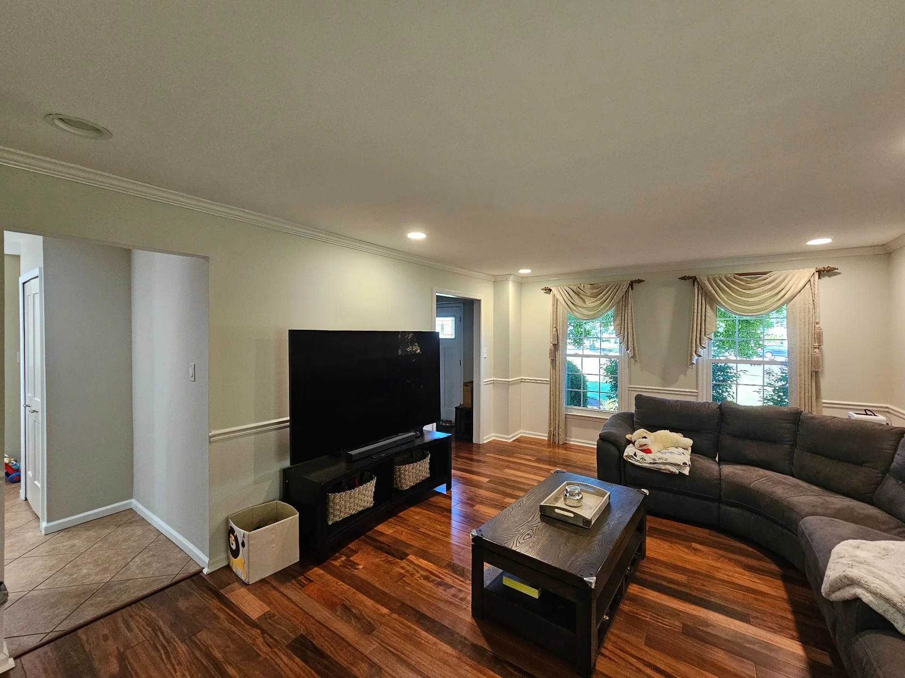

Painting contractor · Blue Bell, PA
Detail-driven painting for Blue Bell homes.
Interior, exterior, cabinet and surface-preparation services for Blue Bell homeowners who want clear scope, careful execution and direct communication.

Real Cascade projectLocal service
What Cascade brings to a Blue Bell project.
For Blue Bell projects, the goal is not simply to put new color on the walls. We look at how the existing finishes, trim, ceilings, repairs and adjoining surfaces come together so the completed space feels intentional rather than pieced together.
Before scheduling the work, we define what is included, what needs repair, what will be protected and what finish system is appropriate. That preparation is especially important in occupied homes where cleanliness and sequence affect the experience as much as the final coat.
Blue Bell is part of our regular Montgomery County service area, with estimating and project planning handled from nearby Lansdale.
What to expect
- Scope tied to the actual surfaces
- Protection and preparation defined up front
- Clear point of contact during the project
- Final walkthrough before closeout
Planning a project in Blue Bell?
Share the basics and we will help you define the next step.
Request an Estimate ↗